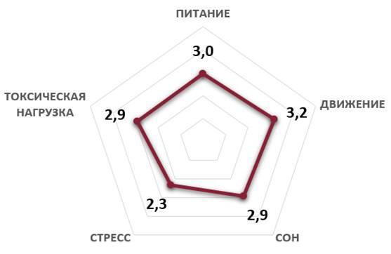
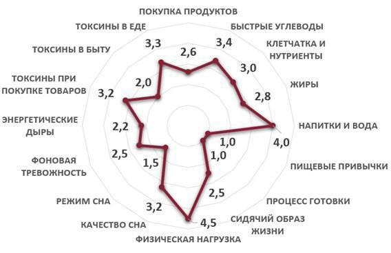
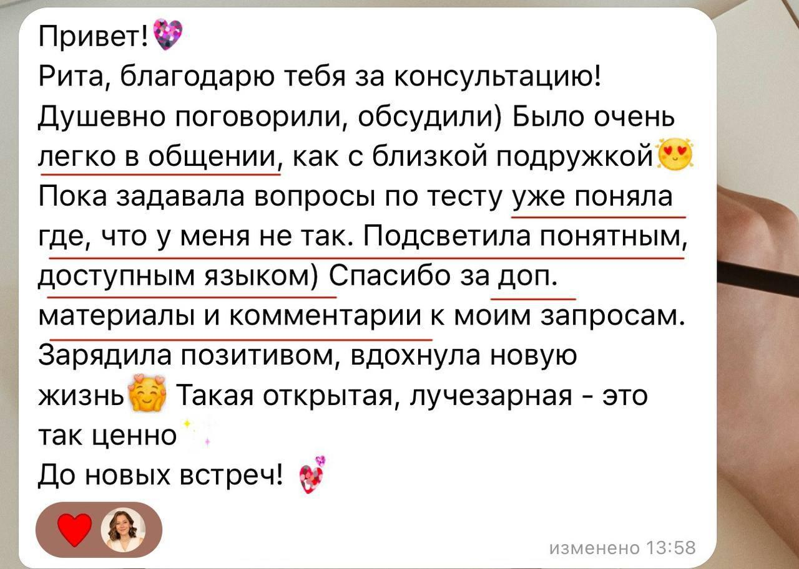
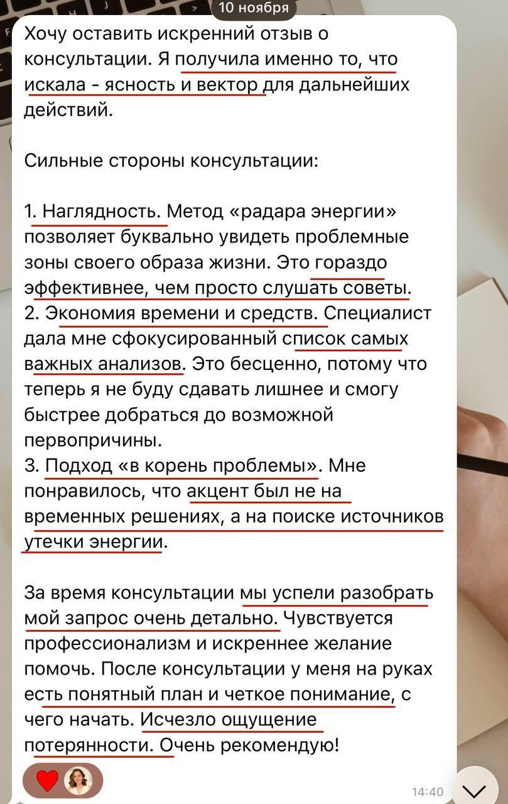
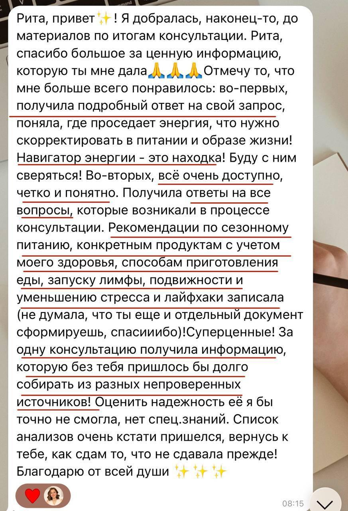
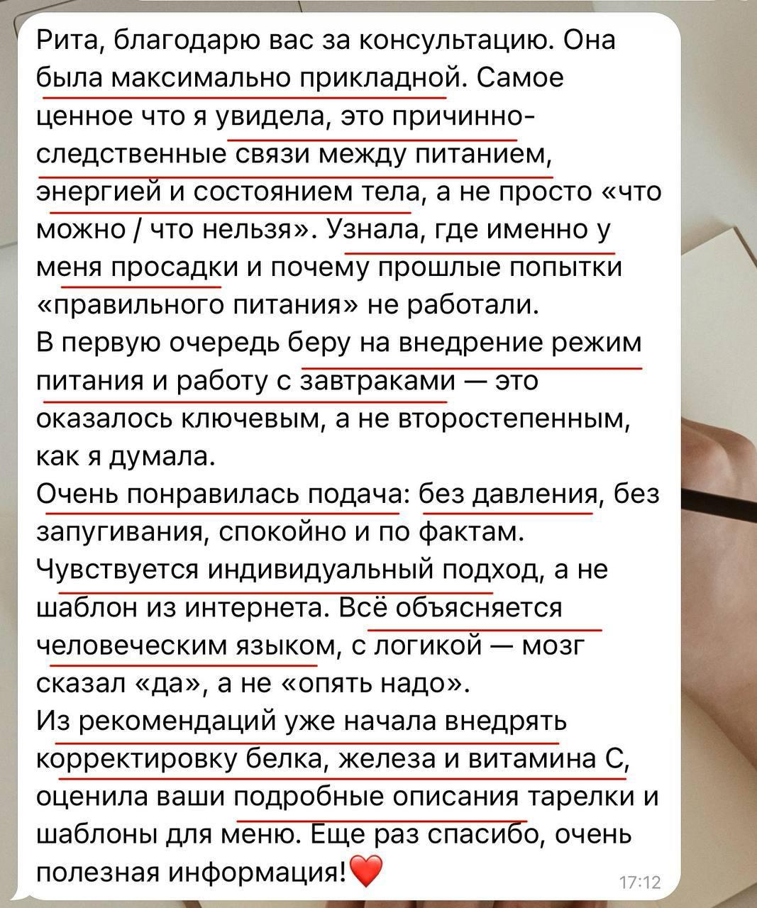
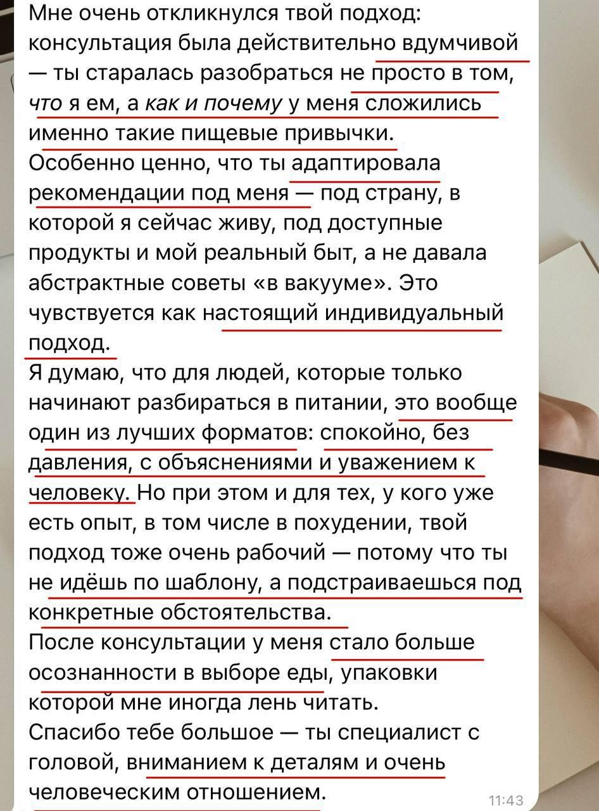
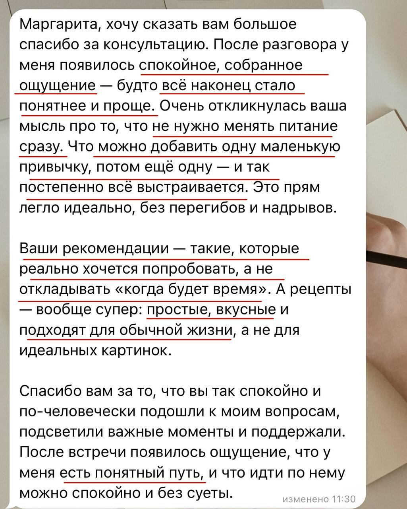
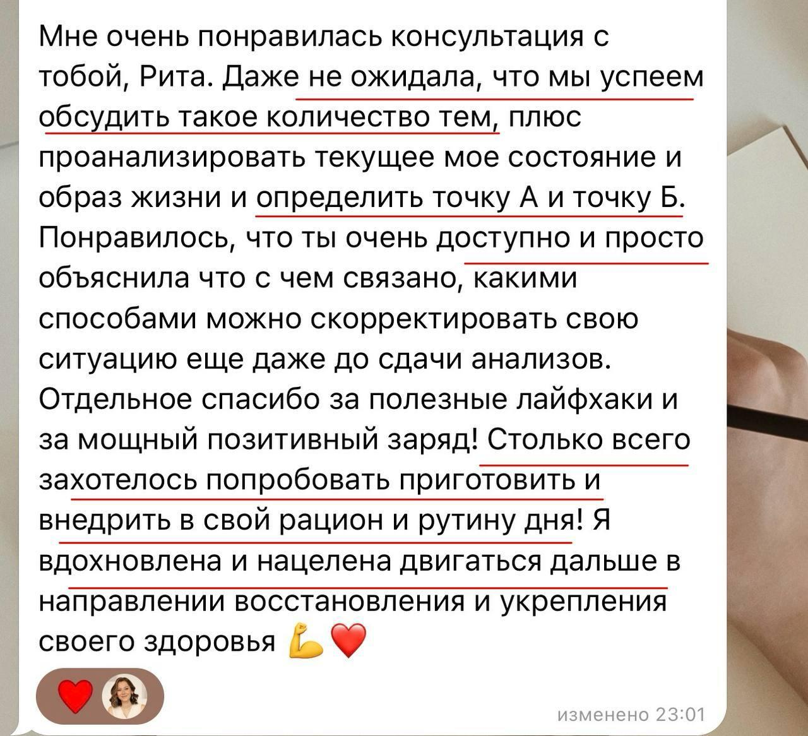
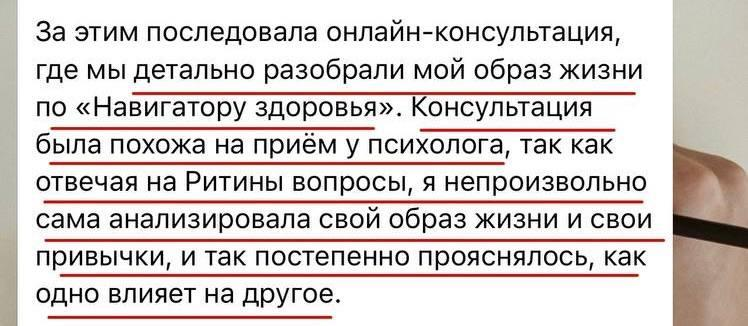

Стратегическая сессия
Навигатор здоровья
Получите дорожную карту привычек по питанию и образу жизни для повышения энергии и продуктивности, решения вашего запроса по здоровью. Вы почувствуете изменения в вашем состоянии уже после первой недели внедрения рекомендаций.
Комплексная диагностика вашего питания и образа жизни для решения ключевого запроса по здоровью.
Сессия по Навигатору
Кому подходит
-
Ощущаете постоянную усталость несмотря на количество часов сна, сложно проснуться утром, есть нехватка сил вечером, каша в голове, апатия, плохое настроение, нет мотивации на все свои идеи, не понимаете, почему такой провал в энергии
-
Поняли, что летняя одежда уже маловата, хотите перезагрузить организм, избавиться от лишних кг, но не знаете, с чего начать, или пробовали диеты, но не особо помогают
-
Не нравится состояние кожи, волос, ногтей
-
Неприятные симптомы в ЖКТ (боли, вздутия, газообразования и др.) мешают вам жить
-
У вас есть диагноз, и хотите подойти к нему комплексно
-
Цените свое здоровье и уровень энергии, хотите профилактировать заболевания, иметь классное самочувствие и достигать своих целей
Как проходит
Этапы Навигатора
Я помогу определить, где в питании и образе жизни закрались утечки здоровья, красоты и энергичного самочувствия, подскажу шаги для наиболее быстрого и эффективного решения запроса.
-
Анкета перед сессией
Заполнение короткой анкеты перед сессией, чтобы понять ключевой волнующий вопрос по здоровью, текущую ситуацию, желаемый результат (точку А и точку Б).
-
Сессия 1.5–2 часа с диагностикой по Навигатору
На сессии через глубинное интервью, составленное именно под ваш запрос, мы находим утечки вашего здоровья, энергии и красоты в питании и образе жизни — смотрим по 5 направлениям: рацион, сон, движение, токсины, стресс — обсуждаем и согласуем шаги для закрытия утечек.


Пример Навигатора -
Отправка материалов по итогам сессии
(в течение 2 рабочих дней после сессии)
- дорожная карта от точки А к точке Б с привычками в питании и образе жизни
- список анализов
- Навигатор как инструмент для самодиагностики
- аудио или видеозапись сессии
-
Ответы на вопросы
В день сессии и 4 дня после.
-
Сбор обратной связи по итогам сессии
-
Точка касания через 2 недели
В чате для оценки прогресса.
Результат
Что вы получите
-
01
Комплексный взгляд на запрос
Через Навигатор вы наглядно в виде удобной схемы увидите, что конкретно в вашем питании и образе жизни просит первоочередного внимания для решения вашего запроса, где закрались утечки вашего здоровья, красоты и энергии.
-
02
Дорожная карта с рекомендациями
Для наиболее быстрого и эффективного решения вашего запроса.
-
03
Возможность задать вопросы
Все волнующие вопросы о подходящем для вас питании и образе жизни, о чем сигнализирует ваше тело.
-
04
Список анализов под ваш запрос
Которые стоит посмотреть, чтобы глубже и более точно оценить ваше состояние — работу органов, наличие дефицитов по нутриентам, воспаления и т. д.
-
05
Файл с Навигатором
Выступает как инструмент для самодиагностики: вы сможете возвращаться к нему в дальнейшем и сами сверять свой путь и прогресс.
Живые истории
Отзывы
Сообщения клиентов — как они есть, прямо из Telegram.








Стоимость
5000 ₽
Навигатор предусматривает около 2 часов сессии с глубокой персонализированной проработкой запроса, которая включает адаптацию вопросов к конкретному клиенту перед консультацией и подготовку письменных материалов после — по итогам у вас будет структурированная дорожная карта, навигатор как инструмент для самодиагностики, список анализов под ваш запрос.
Только эта сессия может вам сэкономить от 30 тыс. рублей на самостоятельное изучение темы, на ненужные анализы.
КупитьСигнал
Когда особенно стоит прийти на Навигатор?
- Много всего в мире здорового питания и образа жизни, трудно разобраться самостоятельно, где миф, а что реально работает и поможет конкретно в вашем случае, не навредит
- Избыток информации в теме ЗОЖ, есть ощущение, что это слишком сложно, долго, непонятно, есть вопрос, с чего стоит начать в первую очередь, чтобы не было расфокуса и откатов
- Вроде питаетесь хорошо, полезные привычки уже есть, а энергии все равно не хватает, ходите в уставшем состоянии большую часть дня, хотите увидеть слепые зоны
- Не хватает структурированного индивидуального плана действий, чтобы не откладывать на потом, когда закончится дедлайн, сдам анализы и т. д., а внедрять простые и действенные шаги уже сейчас, заботиться о своем здоровье и уровне энергии
О себе
Маргарита Лунева
Нутрициолог и специалист медицины образа жизни
- Более 6 лет в теме здорового питания и образа жизни
- Дипломы академии лайфстайл медицины LIFEMED: в 2025 году академия признана онлайн-школой года в сфере здоровья и фитнеса по версии GetCourse, крупнейшей в России и СНГ платформы для онлайн-обучения
- Опираюсь на подходы ведущих школ по питанию и клиник, последние научные исследования, в том числе на английском языке
- Работаю индивидуально и веду групповые программы по здоровому питанию и образу жизни
- Провожу онлайн-сессии по питанию и образу жизни для компаний
- Более 4 лет работала в консалтинге специалистом по устойчивому развитию в Kept – знаю, как совмещать полезные привычки и работу в режиме дедлайнов и многозадачности
Вопрос — ответ
Ответы на частые вопросы
Нужны ли свежие анализы для сессии?
Анализы необязательны, метод Навигатора позволяет увидеть ключевые утечки здоровья и энергии в питании и образе жизни без анализов, чтобы не оттягивать заботу о своем здоровье на потом, когда будет возможность сдать анализы.
Входит ли в сессию комплексный разбор анализов?
Если у вас уже есть свежие анализы на руках (делали сами 3–6 мес. назад), вы можете указать это в анкете на сессию после брони места и прислать результаты анализов, учту их при составлении вопросов для Навигатора.
По итогам сессии я пришлю вам список рекомендуемых анализов, которые стоит посмотреть, чтобы глубже и более точно оценить ваше состояние (работу органов, наличие дефицитов по нутриентам и воспаления и т. д.).
Комплексный разбор результатов по этим анализам (в письменном и устном виде) не входит в сессию, т. к. это глубокая работа, которая требует большего времени и погружения, чем предусматривает формат сессии по Навигатору. Разбор анализов и корректировки по анализам входят в индивидуальное сопровождение, т. к. этот формат позволяет провести отдельную сессию только по анализам, чтобы максимально все обсудить без спешки, и далее отслеживать прогресс в динамике.
Разве можно без анализов определить первопричину моего плохого самочувствия?
Даже без анализов можно увидеть зоны в питании и образе жизни, которые требуют внимания для решения вашего запроса по здоровью и энергии. Часто вижу, что есть трудность со сдачей анализов — максимально оттягиваем, нужно выделить финансы, время. В этом случае Навигатор здоровья поможет не откладывать заботу о своем здоровье на когда-нибудь, когда сдам анализы, а внедрять наиболее важные для вас привычки уже сейчас. Это поможет вам не терять время с плохим самочувствием.
Будут ли письменные рекомендации после сессии?
Да, по итогам сессии пришлю письменные пояснения и схему Навигатора с зонами для улучшения.
А точно питание и образ жизни помогут решить мой запрос?
Если у вас есть сомнения, можете написать мне в личные сообщения по кнопке на сайте, рассказать про ваш запрос и я отправлю подробные пояснения, поможет ли в вашем конкретном случае питание и образ жизни.